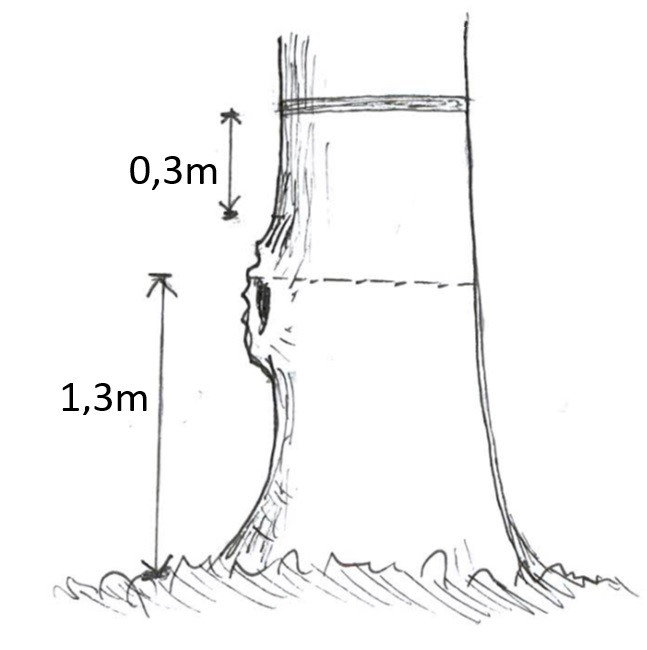
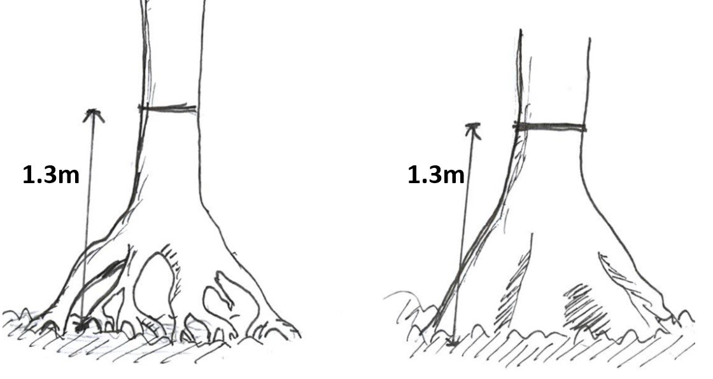

3 Protokol Survei
3.1 Avifauna
Pengamatan burung atau avifauna yang biasa dilakukan oleh FF`s IP mengadopsi dua metode utama yaitu metode titik hitung di transek (Point transect) (Buckland 2006) dan daftar jenis MacKinnon (Mackinnon lists) (MacKinnon and Phillipps 1993). Pada dasarnya metode point transect merupakan modifikasi dari metode titik hitung, namun unit sampelnya berada dalam transek yang sudah ditetapkan, metode ini efektif digunakan pada hutan tropis, dimana jalurnya seringkali sulit untuk dilalui dan burung menghuni seluruh strata hutan dari permukaan tanah hingga diatas tajuk. Dengan fokus pada titik tertentu di dalam transek, deteksi burung jadi lebih efektif. Pada Mackinnon lists survei dilakukan bisa di jalur transek atau pun di luar transek. Kedua metode ini saling melengkapi dalam pengumpulan data jenis-jenis burung
3.1.1 Persiapan Tim
Tim avifauna idealnya terdiri dari 2 orang, yaitu pengamat utama dan asisten lapangan. Dengan peran dan tanggung jawab yang terangkum dalam Tabel 3.2.
| Peran | Tanggung jawab | Syarat khusus |
|---|---|---|
| Pengamat utama | Mengamati dan mengidentifikasi burung pada lokasi yang disurvei, kemudian memberikan informasi pada pencatat mengenai data yang dibutuhkan seperti yang tertera pada lembar data | Memahami protokol serta identifikasi jenis burung dan penggunaan peralatan pendukung survei |
| Asisten lapangan | Mencatat data temuan survei dan juga sebagai pencatat waktu (time keeper) | Memahami protokol survei avifauna dengan baik |
3.1.2 Peralatan
| Peralatan | Penggunaan | Spesifikasi |
|---|---|---|
| Alat Tulis | Pencatatan data dan penandaan | Kuat, tidak mudah luntur |
| Lembar data | Lembar pencatatan data | Tahan air |
| Alat Navigasi (GPS, Peta dan Kompas) | Untuk navigasi sekaligus penanda lokasi geografis | Tahan air |
| Binokuler | Untuk melihat dan mengidentifikasi burung | Perbesaran lensa minimal 8 x 40 atau 7 x 50 |
| Kamera | Untuk dokumentasi burung dan identifikasi lebih lanjut | DSLR dengan lensa tele 300 – 400 mm. Alternatif lainnya dapat menggunakan kamera digital prosummer dengan perbesaran optik diatas 30x |
| Perekam suara genggam | Merekam suara burung untuk identifikasi lebih lanjut | Perekam suara digital dengan fitur directional microphone |
| Perekam suara pasif | Merekam suara burung untuk identifikasi burung yang sensitif | Tahan air. Perangkat yang biasa digunkan adalah audiomoth (Hill et al. 2019) |
3.1.3 Protokol Pengamatan
3.1.3.1 Titik hitung
Protokol untuk survei dengan metode titik hitung dalam transek yang dilakukan oleh FF`s IP menggunakan enam buah titik hitung dengan rentang antar titik berjarak 200m sehingga akan membentuk garis transek sejauh 1 Km (Gambar 3.1). Radius pengamatan per titik adalah 50m dari titik pusat. Titik pusat yang dimaksud adalah titik yang telah ditentukan. Pengamatan menggunakan titik hitung mengikuti asumsi-asumsi berikut ini:
- Burung tidak mendekati pengamat atau terbang;
- Burung yang ada dalam titik cuplik dapat terdeteksi 100%;
- Burung tidak bergerak selama perhitungan;
- Burung berperilaku bebas (tidak tergantung satu sama lain);
- Pelanggaran terhadap asumsi tersebut tidak berpengaruh terhadap habitat atau desain studi;
- Estimasi jarak akurat;
- Burung dapat teridentifikasi dengan baik seluruhnya.
Dalam pelaksanaannya, pengamat berhenti pada suatu titik pengamatan selama 20 menit untuk mengamati dan mencatat jenis burung yang dapat diidentifikasi di sekitar lokasi penelitian. Setelah 20 menit, pengamat kemudian berpindah ke titik pengamatan lain dan kemudian melakukan pengamatan lagi di titik pengamatan tersebut dengan waktu yang sama yaitu selama 20 menit. Jumlah titik pada setiap jalur adalah enam titik, dengan jarak masing-masing titik 200 m, sehingga panjang jalur pengamatannya adalah 1 km. Pengamatan dilakukan pada pagi hari pukul 06.00-09.00 WIB dan sore hari pukul 15.30-18.00 WIB. Perjumpaan terhadap jenis burung di luar titik pengamatan tidak diperhitungkan. Pada setiap jalur pengamatan dilakukan pengulangan pengamatan sebanyak dua kali. Pengamatan dilakukan melalui perjumpaan langsung dengan objek (visual) dan melalui suara. Parameter yang dicatat adalah jenis burung, jumlah yang ditemukan dan aktivitas. Jika memungkinkan, maka jarak setiap burung yang dijumpai terhadap pengamat juga diukur, dengan data seperti itu maka kepadatan burung juga dapat dihitung dengan konsep distance sampling (Buckland et al. 2015).

Cara Pelaksanaan :
Sebelum menuju ke titik hitung, pengamat sudah menentukan lokasi titik – titik hitung tersebut di GPS.
Pengamat menuju titik yang sudah ditentukan di dalam transek, dimana jarak antar point sepanjang 200 meter.
Setiap titik ditandai di dalam GPS
Pengamat berdiri di titik tengah dari point yang sudah ditentukan.
Pengamat mengamati dan mencatat burung yang terdengar ataupun terlihat selama 20 menit ke dalam lembar pengamatan titik hitung (Gambar 10.1)
Untuk penggunaan perekam suara, bisa digunakan selama 20 menit pengamatan atau ketika mendengar suara-suara yang menarik.
Asisten dapat membantu mengukur parameter lingkungan disekitar lokasi pengamatan selama durasi pengamatan kedalam lembar data parameter lingkungan (Gambar 10.2) secara semi-kuantitatif.
3.1.3.2 Daftar jenis MacKinnon
Metode ini pada dasarnya membuat sejumlah daftar yang berisi catatan nama jenis-jenis burung yang dijumpai untuk mendapat gambaran cepat mengenai kekayaan dan komposisi jenis burung pada suatu wilayah. Rincian prosedur penyusunan daftar dijelaskan di bawah ini.
Cara Pelaksanaan:
Berjalan di suatu habitat, seperti perjalanan dari desa menuju camp, di sekitar camp, dari camp menuju transek, transek satu kilo diluar point dan ketika perjalanan dari point menuju point yang lain dan mencatat semua jenis burung yang dijumpai sampai tercatat 20 jenis burung dalam satu daftar. Satu jenis burung hanya dicatat satu kali saja dalam satu daftar ini, meskipun dijumpai beberapa kali
Setelah tercatat 20 jenis burung, lalu membuat daftar yang baru untuk mencatat jenis-jenis yang dijumpai selanjutnya (daftar no.2). Apabila dijumpai jenis yang pernah tercatat dalam daftar pertama maka tetap dicatat dalam daftar kedua, tetapi sebagaimana dalam pembuatan daftar pertama, jenis yang sudah dicatat dalam daftar kedua tidak boleh dicatat lagi meskipun dijumpai beberapa kali (di dalam satu daftar tidak boleh ada pengulangan jenis). Jika suatu spesies ditemukan kembali dalam 1 daftar yang belum mencapai 20 spesies, maka spesies tersebut hanya dihitung sebagai tambahan populasi pada spesies yang sama (bukan spesies baru)
Jika menemukan spesies yang menarik maka di tandai posisinya di dalam GPS, begitu juga jika mendengar suara yang menarik maka bisa di rekam di perekam suara.
Metode ini meskipun sederhana, namun membutuhkan pengetahuan yang baik terhadap ekologi dan perilaku burung-burung di area survei. Terkadang pengamat boleh untuk duduk bersembunyi sebentar saat berada habitat yang sedang berbuah dan berbunga untuk melihat dan mendengar burung-burung yang berkunjung. Lampiran Gambar 10.3, merupakan contoh lembar data untuk metode daftar jenis MacKinnon.
3.1.3.3 Perekam suara pasif
Untuk melengkapi daftar jenis burung-burung yang mungkin terlalu sensitif terhadap keberadaan manusia / pengamat, maka penggunaan perekam suara dapat dijadikan alternatif karena mampu merekam tanpa kehadiran pengamat selama waktu yang dibutuhkan dan tidak akan ada bias dalam identifikasi karena memiliki data suara yang terdokumentasikan dengan baik. Dalam praktiknya, FF`s IP seringkali menggunakan perangkat perekam suara audiomoth untuk merekam suara burung-burung di hutan.
Perekam suara dapat ditempatkan disetiap titik hitung sebagai data pelengkap atau lokasi spesifik lainnya yang diperkirakan memiliki kelimpahan burung dengan jarak minimal antar perekam suara 250 - 1000 meter. Setiap perekam suara diaktifkan minimal 1 x 24 jam agar burung diurnal dan nokturnal dapat terekam. Prinsipnya semakin lama di aktifkan maka data yang diperoleh semakin baik, perangkat ini dapat diaktifkan hingga sekitar 10 hari dengan baterai tipe alkalin dengan pengaturan 5 menit merekam dan 30 menit jeda. Adapun protokol penggunaan perekam suara adalah sebagai berikut;
Melakukan pengaturan perangkat dengan spesifikasi sebagai berikut
Sample rate; 48 Khz
Gain; Medium
Sleep duration; 1800s
Recording duration; 300s
Pastikan pengaturan sudah sesuai dengan yang kita inginkan, dengan melakukan simulasi terlebih dahulu
Beri label pada setiap perangkat untuk membedakan antar perekam suara
Bungkus perangkat dengan plastik atau penutup kedap air dan pasang pada batang pohon dengan ketinggian sekitar 2 meter.
Catat kordinat pemasangan, waktu mulai dan waktu berakhirnya pada lembar pengamatan
3.2 Herpetofauna
Survei herpetofauna biasanya didasarkan pada tujuan untuk mendapatkan informasi mengenai:
- Daftar jenis herpetofauna pada suatu lokasi
- Densitas atau kelimpahan relatif pada suatu lokasi
- Penyebaran jenis
- Aspek spesifik pada satu jenis seperti penggunaan habitat, pola aktivitas, biologi, reproduksi, dan sebagainya
Perbedaan tujuan survei berpengaruh terhadap metode yang digunakan, usaha (effort), biaya dan waktu. Untuk survei yang bertujuan memperoleh daftar jenis, untuk memperoleh sebanyak mungkin jenis pada suatu lokasi perlu dilakukan pencarian aktif dan jebakan (pasif) dengan waktu yang mencakup siang dan malam hari. Hasil survei juga tergantung pada kondisi cuaca dan musim. Terdapat beberapa kendala dalam survei daftar jenis, diantaranya lama pengamatan yang mempengaruhi hasil temuan, biaya dan efektifitas kerja. Perbandingan hasil survei baik pada lokasi yang sama ataupun berbeda, perlu memperhatikan usaha (effort), musim dilakukan survei, dan metode yang digunakan
Metode yang biasa digunakan oleh FF`s IP adalah pencarian langsung dengan metode Survei Perjumpaan Visual (Visual Encounter surveis - VES) ( Gambar 3.2). Metode ini dilakukan dengan menyusuri area atau habitat herpetofauna dengan batasan waktu tertentu. Pencarian herpetofauna difokuskan pada tipe jenisnya, pencarian di tajuk pohon, batang dan ranting untuk jenis arboreal, kemudian pencarian di balik serasah, batu, kayu lapuk untuk jenis terestrial, terdapat juga jenis yang hidup di dalam tanah (fosorial) dan perairan seperti sungai, danau, dan kolam.
Metode VES memiliki batasan waktu pencarian di luar waktu penangkapan dan pencatatan. Penentuan batas waktu total biasanya 2 jam per orang per pengambilan sampel. Metode ini dapat dilakukan pada jalur transek, plot petak, aliran sungai, kolam dan lainya. Metode diterapkan dengan melakukan survei lokasi pengamatan dengan menentukan lokasi pengamatan yang memiliki dugaan habitat herpetofauna, membuat sedikit jalur untuk memudahkan pengamatan malam hari dan memberi tanda pada lokasi. Data yang dikumpulkan adalah ukuran lokasi, karakteristik habitat berupa vegetasi dominan, kerapatan tajuk, kondisi fisik lokasi dan dokumentasi lokasi.

Persiapan Langkah awal sebelum melakukan survei salah satunya adalah pengumpulan informasi terkait lokasi survei dan data dasar pada lokasi. Informasi lokasi survei yang dimaksud antara lain, status administrasi, letak dan aksesibilitas lokasi survei. Sedangkan informasi data dasar berupa peta lokasi, data hasil survei sebelumnya dan data pendukung lain yang diperlukan. Informasi tersebut dapat diperoleh secara langsung kepada pengelola lokasi survei atau melalu lembaga yang menyediakan informasi terkait.
3.2.1 Persiapan Tim
Tim herpetofauna idealnya terdiri dari 3 orang, yaitu seorang pencatat, pencari atau pengamat, dan asisten lapangan (Tabel 3.3). Namun pada kondisi tertentu, survei dapat dilakukan oleh 2 orang saja dengan konsekuensi seorang pencatat berperan juga menjadi spotter pada saat yang sama.
| Peran | Tanggung jawab | Syarat khusus |
|---|---|---|
| Peneliti utama; Pengamat (Spotter) | Mencari herpetofauna pada lokasi yang disurvei, mengambil foto dari individu herpetofauna, kemudian memberikan informasi pada pencatat mengenai data yang dibutuhkan seperti yang tertera pada lembar data | Memahami protokol serta identifikasi jenis dan penggunaan peralatan pendukung survei |
| Asisten I: Pencatat | Mencatat data temuan survei dan juga sebagai pencatat waktu (time keeper) | Memahami protokol survei herpetofauna dengan baik |
| Asisten II: Penunjuk jalan | Porter atau penunjuk jalan saat survei dan membantu pencarian herpetofauna | Memahami area survei dan kemampuan membaca jalur |
3.2.2 Peralatan
Peralatan survei yang dipersiapkan disesuaikan dengan waktu, metode dan jumlah surveior. Menyusun daftar peralatan perlu pengelompokan sesuai fungsi untuk mempermudah persiapan, secara umum disusun sebagai berikut:
| Kelompok | Alat |
|---|---|
| Navigasi | GPS, kompas, dan peta |
| Survei dan koleksi data | Senter kepala (headlamp), jam tangan, penggaris, meteran, plastik sampel, kantong kain, kamera, alat tulis, lembar data, Sepatu boot |
| Preservasi | Kotak specimen, kain kasa, syringe, alat bedah, kertas label, benang, gunting, alkohol, formalin, toples spesimen |
3.2.2.1 Baterai
Baterai digunakan untuk alat-alat seperti headlamp, GPS dan Kamera. Kalkulasikan kebutuhan baterai tersebut sebelum melakukan survei. Informasi lama daya tahan baterai saat digunakan oleh suatu alat sangat penting untuk menghitung berapa banyak jumlah baterai yang digunakan setiap harinya.
Tipe baterai yang digunakan perlu menjadi perhatian. Disarankan menggunakan baterai yang memiliki ketahanan yang lama seperti baterai alkaline non-rechargeable. Hal tersebut berdasarkan pada pertimbangan biasanya tidak terdapat sumber listrik pada lokasi survei.
Selain peralatan survei, perlu dipersiapkan perlengkapan pribadi untuk kegiatan di lapangan, logistik bahan lapang, makanan dan obat-obatan. Kegiatan di lapangan sebaiknya disusun dengan jadwal kegiatan perhari dan tabel waktu selama survei agar efektif.
3.2.3 Protokol Pengamatan
3.2.3.1 Waktu Pengamatan
Pengamatan pada waktu siang hari dilakukan dengan estimasi waktu pukul 08.00 – 10.00 untuk mencari jenis yang aktif pada siang hari (diurnal), terutama untuk kelompok reptil (kadal, ular). Pengamatan pada waktu malam hari dilakukan dengan estimasi waktu pukul 19.00 – 22.00 pada lokasi yang telah disurvei saat siang hari. Tidak ada batasan berapa jumlah pengamat pada tiap pengamatan, namun demi keamanan minimal jumlah pengamat adalah 2 orang
3.2.3.2 Persiapan Pengamatan
- Persiapkan alat yang diperlukan dan lakukan pengecekan kondisinya. Terutama GPS, headlamp dan kamera serta persiapkan baterai cadangannya.
- Cek kesehatan anggota tim
- Lakukan pembagian tugas. Pembagian tugas yang dimaksud adalah pembagian kerja kepada tiap anggota tim berupa pencari / pengamat utama, dokumentasi, pengukur dan pencatat data.
- Cek kembali kondisi alat – alat sesampainya di lokasi observasi yang telah ditentukan dan sesaat sebelum melakukan pengamatan
3.2.3.3 Koleksi Data
- Hal pertama yang dilakukan adalah pencatatan waktu, kondisi cuaca dan lingkungan (suhu dan kelembapan udara).
- Mulai mencari dengan berjalan perlahan sambil menyorotkan lampu pada pada substrat tajuk, batang, serasah, lubang, di balik batu dan kayu mati. Indikasi adanya herpetofauna dapat dilihat dengan pantulan cahaya dari mata satwa tersebut. Terkadang dapat diketahui melalui suara, terutama untuk katak dan kodok.
- Saat menemukan satwa, hal pertama yang dicatat adalah waktu ditemukan, tempat ditemukan (jarak horizontal dari badan air, jarak vertical dari permukaan tanah), substrat, aktivitas, dan nama jenis jika sudah dapat diketahui pada tally sheet
- Tangkap satwa tersebut jika kondisi memungkinkan untuk dilakukan.
- Katak: Perlahan dekati satwa hingga mencapai jangkauan tangan, posisikan tangan sejajar dengan badan katak dari belakang. Cekungkan tangan dan arahkan ke depan moncong katak dengan perlahan, kemudian dengan gerakan cepat menangkap katak dengan genggaman yang tidak terlalu kuat
- Ular: Jangan coba untuk menangkap ular jika tidak benar – benar diketahui bahwa ular tesebut tidak berbisa. Gunakan graber atau tongkat untuk mengangkat ular kemudian letakkan di atas permukaan tanah. Perlahan tahan kepala ular dengan tongkat. Setelah tenang, genggam leher ular dengan posisi semua jari berada di bagian leher dan jempol menahan bagian atas kepala. Jangan mengambil risiko untuk menangkap ular berbisa seperti spesies–spesies dari famili Elapidae dan Viperidae. Cukup lakukan pengambilan foto dari beberapa bagian tubuh seperti punggung, sisi tubuh dan bagian atas, sisi kepala dari jarak yang relatif aman tanpa mengganggunya. Foto tersebut dapat dijadikan dokumentasi untuk keperluan identifikasi kemudian.
- Lakukan identifikasi jenis, ukur panjang badan (SVL) dan panjang ekor (Gambar 3.3). Untuk ular, gunakan graber atau tongkat untuk mengangkat ular kemudian letakkan di atas permukaan tanah. Perlahan tahan kepala ular dengan tongkat. Setelah tenang, genggam leher ular dengan posisi semua jari berada di bagian leher dan jempol menahan bagian atas kepala. Pengukuran panjang sebaiknya dilakukan dengan tetap meletakkan badan ular di atas tanah, sedangkan pengukuran menggunakan tali atau meteran jahit dengan mengikuti alur badan ular
- Jika sudah dapat memastikan jenisnya dan selesai melakukan pengukuran, lepas kembali hewan tersebut ke tempat semula ditemukan.
- Jika belum dapat teridentifikasi, masukkan hewan ke dalam plastik spesimen (untuk katak dan kodok), dan kantung kain (untuk reptil). Tulis kode jenis pada plastik dengan menggunakan spidol dengan tinta permanen (spidol waterproof), (catatan: satu plastik untuk satu individu), catat kode jenis di plastik pada tally sheet, dengan plastik spesimen. Catatan: jangan meniup plastik untuk memberikan udara.
- Hentikan pengamatan saat:
- Waktu pengamatan berakhir. Catat waktu akhir pengamatan, cuaca, dan kondisi lingkungan (suhu, kelembapan)
- Terjadi hujan lebat yang tidak memungkinkan pengamatan dilakukan, karena akan membahayakan pengamat saat melakukan pengamatan di sungai.
- Cek kembali kelengkapan alat, kondisi anggota tim dan sampel yang dibawa sebelum pulang.

3.2.3.4 Foto dan koleksi spesimen
Foto satwa berfungsi sebagai bukti keberadaan jenis tersebut, dokumentasi dan media identifikasi. Foto satwa terbagi menjadi dua berdasarkan kegunaannya, yaitu foto sebagai display dengan menunjukkan momen dan posisi menarik dari satwa tersebut. Kemudian foto sebagai media identifikasi dengan menunjukkan detail dari bagian morfologi satwa (?fig-spesamf1). Pengambilan foto dapat dilakukan pada saat menemukan satwa di lokasi/ habitat alaminya, atau dengan menggunakan studio yang dibuat menyerupai habitat alami satwa tersebut. Perlu diperhatiakan dalam pengambilan foto harus memperhatiakan substrat latar belakang yang sesuai dengan habitatnya, kemampuan kamera dalam membuat foto makro dengan kondisi gelap (menggunakan blitz), dan pembanding untuk foto identifikasi. Pemilihan kamera yang tepat terutama dengan kemampuan makro tinggi (jarak lensa dengan satwa kurang dari 10 cm), pengaturan ISO tinggi, mode pengambilan foto pada malam hari, dan pengaturan flash (manual) sangat menentukan hasil foto.
Jika jenis yang akan didokumentasikan (foto) merupakan jenis yang terlalu sulit untuk diambil di lokasi terutama untuk foto identifikasi, maka dapat dibuat studio buatan yang menyerupai habitatnya. Studio buatan dapat dibuat dengan serasah daun, batang pohon, batu, dan lain-lain pada suatu ruangan (kotak) yang tertutup. Foto identifikasi biasanya dilakukan pada spesimen yang telah diawetkan (mati), agar terlihat jelas morfologi ataupun anatomi tubuh jenis tersebut (?fig-spesamf1).
Beberapa hal penting yang perlu diperhatikan dalam melakukan survei Herpetofauna, adalah sebagai berikut:
- Pengamatan dilakukan pada lokasi yang telah disurvei dengan data jalur, koordinat lokasi, penanda jalur yang lengkap dan perizinan kepada pengelola serta masyarakat sekitar lokasi.
- Surveior minimal dua orang, sebaiknya didampingi oleh pemandu yang mengetahui kondisi lokasi dan mampu melakukan pengamatan malam.
- Persiapkan perlengkapan lapang, alat komunikasi dan perlengkapan P3K untuk mengantisipasi terjebak di lokasi pengamatan dan terpaksa menginap.
- Pertimbangkan kondisi cuaca dan kesehatan tim, jika tidak memungkinkan jangan dipaksakan untuk melakukan pengamatan.
- Surveior sebaiknya melakukan pencarian dengan jarak yang dapat dipantau satu dengan yang lainnya.
- Saat ditemukan satwa, sesegera mungkin mengambil data yang diperlukan dan melanjutkan pencarian.
- Perlakukan satwa yang ditangkap dengan hati-hati tanpa menyakiti, lebih baik menggunakan tangan secara langsung untuk memegang satwa.
- Penanganan pada jenis yang berbahaya dan sulit ditangkap sebaiknya dilakukan minimal dua orang.
- Penyimpanan spesimen yang ditangkap, untuk amfibi ditempatkan pada plastik, sedangkan untuk reptil ditempatkan pada kantong kain dan satu individu satu kantong.
- Pengamatan selesai jika jalur atau plot yang ditentukan sudah teramati, alokasi waktu sudah habis, perubahan kondisi cuaca dan medan yang membahayakan.
- Secepat mungkin dilakukan pengambilan data pada spesimen yang ditangkap dan sesegera mungkin dilakukan preservasi/ pengawetan jika diperlukan.
- Lakukan preservasi pada lokasi yang terpisah, bersih, gunakan masker dan sarung tangan karet (latex gloves) dan jangan lupa mencuci tangan sebelum dan sesudah preservasi.
- Penyimpanan spesimen yang diawetkan sebaiknya diletakkan pada tempat khusus yang terhindar dari cahaya matahari langsung.
3.3 Mamalia
Pengamatan mamalia secara umum jauh lebih sulit dibandingkan dengan taksa lainnya dikarenakan di hutan hujan tropis, beberapa taksa dari mamalia cenderung sangat sulit untuk dijumpai, oleh karena itu metode yang digunakan lebih banyak mengandalkan penggunaan peralatan untuk penangkapan satwa dibandingkan dengan pengamatan atau perjumpaan secara langsung, bahkan pengamatan yang bersifat observatif seringkali hanya mengandalkan jejak yang ditinggalkan dari satwa itu sendiri.
Dikarenakan variasi perilaku dan relung yang jauh berbeda dari setiap taksa mamalia, maka teknik pengamatannya juga berbeda-beda. Beberapa jenis mamalia besar dapat dengan mudah dideteksi secara langsung, seperti jenis-jenis primata, tetapi sebagian besar mamalia kecil memerlukan pengukuran anggota tubuhnya sebelum dapat diidentifikasi. Beberapa buku menjabarkan metode yang spesifik untuk satwa bahkan spesies tertentu seperti pengamatan orangutan (Atmoko and Rifqi 2012), kelelawar (Prasetyo, Noerfahmy, and Tata 2011) maupun harimau dan satwa mangsanya (Pinondang et al. 2018).
Dalam konteks kajian yang biasa dilakukan oleh FF`s IP biasanya menggunakan metode pengamatan langsung menggunakan transek garis yang dikombinasikan dengan metode eksplorasi, sedangkan untuk metode penangkapan, dapat menggunakan live trap, jaring kabut, perangkap harpa hingga kamera pengintai (camera trap). Metode menggunakan kamera pengintai akan dijabarkan dalam panduan khusus, namun hasil yang didapat dari kamera pengintai dapat dikombinasikan dengan kajian ini untuk melengkapi daftar spesies, terutama jenis-jenis yang elusif
Target taksa dari setiap metode terangkum dalam Tabel 2.1. Dalam praktiknya, kajian keanekaragaman hayati mamalia, tidak perlu menggunakan semua perangkat yang disebutkan. Sesuaikan perangkat yang akan dibawa dengan tujuan survei serta sumber daya yang tersedia.
3.3.1 Persiapan Tim
Pelaksanaan survei mamalia di FF`s IP membutuhkan keterampilan dan langkah kerja yang beragam, sehingga membutuhkan beberapa asisten untuk membantu di lapangan. Idealnya, satu orang peneliti utama dibantu dengan 4 orang asisten dengan peran dan tanggung jawab seperti terlihat pada Tabel 3.5. Dalam pelaksanaannya, jumlah, susunan, formasi, peran dan tanggung jawab asisten dapat berubah sesuai kondisi.
| Peran | Tanggung jawab | Syarat khusus |
|---|---|---|
| Pengamat utama | Koordinasi pekerjaan kepada seluruh asisten, memastikan seluruh data tercatat dengan benar sesuai protokol pada lembar data | Memahami protokol survei mamalia dan identifikasi jenis mamalia |
| Asisten I - III | Memasang dan membongkar perangkap harpa dan jaring kabut | Dapat memasang dan membongkar perangkap harpa dan jala kabut, serta mampu memisahkan kelelawar yang terperangkap ke dalam kantong sampel |
| Asisten V | Memasang dan membongkar perangkap kasmin | Dapat memasang dan membongkar perangkap kasmin, serta mampu memisahkan hewan yang terperangkap ke dalam kantong sampel |
3.3.2 Peralatan
| Peralatan | Penggunaan | Spesifikasi |
|---|---|---|
| Alat Tulis | Pencatatan data dan penandaan | Kuat, tidak mudah luntur |
| Lembar data | Lembar pencatatan data | Tahan air |
| Alat Navigasi (GPS, Peta dan Kompas) | Untuk navigasi sekaligus penanda lokasi geografis | Tahan air |
| Binokuler | Untuk melihat dan mengidentifikasi mamalia | Perbesaran lensa minimal 8 x 40 atau 7 x 50 |
| kamera | Untuk dokumentasi mamalia dan identifikasi lebih lanjut | DSLR dengan lensa tele 300 – 400 mm. Alternatif lainnya dapat menggunakan kamera digital prosummer dengan perbesaran optik diatas 30x |
| Perekam suara genggam | Merekam suara mamalia untuk identifikasi lebih lanjut | Perekam suara digital dengan fitur directional microphone |
| Perangkap kasmin | Menangkap mamalia berukuran kecil | Ringan dan dapat dilipat |
| Perangkap jaring kabut | Menangkap kelelawar | tidak ada |
| Perangkap harpa | Menangkap kelelawar | ringan dan mudah dibongkar pasang |
3.3.3 Protokol Pengamatan
3.3.3.1 Transek garis
Pada metode transek garis, pengamat berjalan di sepanjang jalur transek sambil mengidentifkasi dan mencatat satwa yang dijumpai secara langsung atau jejak satwa yang ditinggalkan sebagai indikator keberadaan suatu spesies. Metode ini biasanya digunakan untuk mendeteksi mamalia arboreal secara umum dan beberapa jenis mamalia terrestrial berukuran sedang hingga besar.
Jejak satwa liar memberikan informasi penting tentang keberadaan dan aktivitas hewan di suatu daerah. Mamalia dapat meninggalkan berbagai jejak yang dapat diidentifikasi seperti tapak, cakaran, dan sarang. Tapak biasanya terlihat di tanah yang berlumpur atau dekat sungai tempat mamalia berhenti untuk minum. Cakaran dapat ditemukan pada batang pohon hidup maupun yang sudah mati. Sarang yang dibuat oleh mamalia biasanya berukuran besar dan terletak pada cabang-cabang atau kanopi pohon, misalnya sarang orangutan. Oleh karena itu, jejak satwa liar dapat menjadi petunjuk awal yang penting dalam mengetahui keberadaan dan aktivitas hewan di suatu daerah. Ada beberapa panduan yang dapat dijadikan referensi untuk identifikasi jejak satwa liar, seperti panduan untuk identifikasi tapak mamalia (Van Strien 1983), morfologi feses (Chame 2003) dan bentuk serta contoh sarang orangutan (Atmoko and Rifqi 2012).
Teknik mengidentifikasi satwa dari jejak yang ditinggalkan membutuhkan pelatihan yang teratur bersama surveior yang berpengalaman. Selain itu, mengikutsertakan orang lokal yang memiliki pengalaman dalam berburu atau menjelajah hutan secara rutin dapat membantu mengenali jejak dan suara satwa dengan lebih baik. Selain itu, kemampuan membuat catatan lapangan yang akurat saat menemukan jejak juga sangat penting untuk mendokumentasikan temuan secara efektif dan menjadi sumber belajar yang berharga bagi surveior lain.
Cara Pelaksanaan:
- Pengamatan di transek garis dilakukan pada pagi hari pukul 06:00 dan berjalan secara perlahan hingga ke ujung transek sejauh 2000 m, kemudian melakukan pengamatan lagi pada malam hari. Pengamatan malam dapat dimulai pada pukul 16:00 jika bertujuan untuk sambil memasang perangkap, atau jam 19:00 jika hanya melakukan transek garis.
- berjalan secara perlahan dan konsisten, serta usahakan sesunyi mungkin sambil memperhatikan keberadaan satwa liar.
- Pengamat utama harus membagi tim untuk personil yang khusus mencari satwa secara langsung di tajuk-tajuk pohon untuk mendeteksi primata dan satwa arboreal lainnya. Personil ini harus selalu berjalan sepanjang jalur utama transek dan berada di barisan paling depan.
- Personil lainnya ditugaskan untuk mencari jejak satwa di lantai hutan dan batang pohon. Personil ini dianjurkan untuk menjelajahi area disekitar jalur transek bila memungkinkan.
- Apabila melihat satwa secara langsung, usahakan catat jarak perpendikular satwa tersebut dari jalur transek (Gambar 3.4), kemudian catat temuan tersebut di lembar data mamalia (Gambar 10.5). Apabila kondisi memungkinkan, berhenti sejenak untuk dapat mengambil foto satwa tersebut.
- Apabila menemukan jejak satwa berupa tapak, kotoran, cakaran dan jejak visual lainnya catat di lembar data dan foto temuan tersebut menggunakan ukuran pembanding (Gambar 3.5).
- Apabila tim mendengar suara mamalia yang belum dikenali atau diragukan spesiesnya, usahakan berhenti sejenak untuk merekam suara tersebut supaya dapat diidentifikasi lebih lanjut.
- Pastikan seluruh pencatat temuan sesuai dengan lembar data mamalia

Pada penerapannya, pengamatan langsung seringkali dikombinasikan dengan metode eksplorasi, yang tidak dibatasi oleh jalur transek. Seperti perjalanan menuju kamp atau perjalanan antar transek. Pengamat ini dilakukan dengan mencari mamalia secara intuitif, seperti memeriksa kedalam lubang kayu mati untuk melihat kelelawar, memeriksa sempadan sungai untuk melihat jejak kotoran berang-berang dan lainnya. Setiap temuan juga dapat dimasukan ke dalam lembar data sebagai pelengkap informasi keanekaragaman spesies dalam suatu areal kajian.
3.3.3.2 Live trap
Perangkap ini digunakan untuk menangkap mamalia kecil (cth; tikus, bajing, tupai), disebut live trap karena satwa yang terangkap biasanya dilepaskan kembali. Di Indonesia, umumnya ada dua versi yaitu, perangkap kasmin yang paling umum didapatkan (Gambar 3.6 (a)), dan perangkap sherman ( Gambar 3.6(b)). Kedua perangkap tersebut harus dimodifikasi supaya dapat dilipat dan mudah dibawa dengan ukuran sekitar 13 x 26 x 13 cm. Pada beberapa penelitan, perangkap ini juga bisa dimodifikasi untuk dipasang di batang pohon (Gambar 3.7).
Cara Pelaksanaan :
- Sebelum dibawa ke area survei, perangkap harus disterilkan dulu dengan dicuci atau di rendam beberapa saat dengan air panas untuk menghilangkan bau dari pemakaian sebelumnya.
- Pastikan seluruh mekanisme perangkap dalam keadaan baik dengan memicu pelatuk tempat umpan serta penutup perangkap dapat menutup dengan utuh.
- Pada saat di area survei, letakan perangkap di tempat-tempat yang diduga menjadi tempat tinggal atau jalur yang dilewat mamalia kecil, seperti di dekat lubang yang berada di tanah, pohon mati berlubang, di bawah pohon, bekas makan dan lainnya. Perangkap dapat dibawa dan dipasang saat melakukan pengamatan pada transek di pagi atau di malam hari.
- Kamuflasikan perangkap dengan seresah dan pasang sekokoh mungkin sejajar dengan permukaan tanah supaya hewan dapat berjalan secara alami kedalam perangkap lalu tandai lokasi pengamatan dengan pita atau label berwarna terang di ranting atau kayu sejajar dengan mata supaya mudah ditemukan saat pengecekan atau pengambilan.
- Masukan umpan ke dalam perangkap. Umpan yang digunakan bervariasi, mulai dari singkong atau kentang yang diolesi selai kacang, ikan asin yang sedikit dibakar, potongan ikan atau daging, bahkan ada juga yang menaruh jangkring atau belalang didalam kantung kain. Pada dasarnya dibutuhkan suatu umpan yang dapat mengeluarkan aroma, atau suara yang dapat memancing tikus mendatangi perangkap.
- Catat lokasi perangkap dan umpan yang digunakan ke dalam lembar data perangkap (Gambar 10.6)
- Perangkap dipasang minimal 1x24 jam untuk kemudian dievaluasi untuk tetap berada dilokasi yang sama atau dipindahkan. Namun setiap perangkap wajib diperiksa pada pagi dan malam hari. Pada saat pengecekan, usahakan ganti umpan jika kondisinya sudah tidak bagus.
- Bila ada satwa yang tertangkap, keluarkan menggunakan sarung tangan yang tebal, lalu masukan ke dalam kantong kain untuk melakukan pengukuran bagian tubuh di kamp. Bagian tubuh yang biasa diukur adalah panjang tubuh (HB), panjang kaki belakang (HF) dan panjang ekor (T) (Gambar 3.8). Jika sudah selesai diidentifikasi dan difoto, maka lepaskan kembali hewan di tempat tertangkap.

3.3.3.3 Jaring kabut dan perangkap harpa
Perangkap jaring kabut dan harpa dapat digunakan untuk menangkap kelelawar, kedua perangkap tersebut dapa digunakan bersama-sama atau sendiri-sendiri. Pada dasarnya perangkap jaring kabur lebih efektif untuk menangkap kelelawar dalam kelompok Megachiroptera atau kelelawar pemakan buah, sedangkan perangkap harpa untuk menangkap kelompok Microchiroptera atau kelelawar pemakan serangga.
Jaring kabut:
- Jaring kabut dipasang sepanjang jalur transek yang diduga menjadi perlintasan keleawar seperti tepi hutan, pintu hutan, melintangi sungai, punggungan jalur dan daerah terbuka. Pemasangan dapa juga mempertimbangkan area dengan pepohonan yang sedang berbuah dan berbunga (Gambar 10.7)
- Jaring kabut idealnya dipasang pada sore hari sebelum matahari terbenam.
- Jaring kabut biasanya dipasang menggunakan ranting atau batang kayu pada jarak 0.5 – 3-meter dari permukaan tanah. Pemasangan jaring kabut harus longgar pada setiap segmen, supaya kelelawar tidak terpantul keluar (Gambar 3.9 (C))
- Setelah jaring kabut terpasang, catat lokasi pemasangan kedalam lembar data (Gambar 10.7). Periksa kembali perangkap pada malam hari saat melakukan pengamatan malam hingga maksimal sampai jam 24:00. Apabila terdapat lebih dari 10 individu, perangkap dapat ditutup, namun jika kurang dari itu perangkap dapat dibiarkan terpasang sampai pagi.
- Perangkap yang dibiarkan terpasang sampai pagi di evaluasi untuk tetap dipertahankan atau dipindahkan ke lokasi yang lain. Apabila perangkap ingin dilanjutkan untuk malam berikutnya, tutup perangkap dengan menggulung bagian tengahnya supaya tidak ada burung yang terjebak.
- Untuk melepaskan kelelawar yang terperangkap, periksa dulu arah masuknya kelelawar pada jaring kabut
- Kendalikan terlebih dahulu kepalanya (bila terlalu sulit, bisa menggunakan kayu untuk gumpalan kain untuk mengalihkan perhatian), setelah itu pegang bagian badannya, lalu keluarkan mulai dari bagian kaki, setelah itu sayap dan kepala.

Perangkap harpa:
- Perangkap harpa dipasang pada jalur transek, dekat sungai, mulut gua, daerah ekoton atau pinggiran hutan.
- Pemasangan dilakukan sebelum matahari terbenam, sekitar jam 16:00 – 17:00, sesuaikan lama pemasangan dengan waktu pemasangan.
- Tutup bagian kiri, kanan dan atasnya perangkap harpa dengan menggunakan tumbuhan disekitar untuk menghindari kelelawar melalui bagian terbuka
- Tutup bagian kiri, kanan dan atasnya kantung harpa menggunakan daun, karena beberapa jenis kelelawar mampu memanjat keluar melalui bagian tersebut. Setelah terpasang dengan sempurna, catat lokasi pemasangan kedalam lembar data (Gambar 10.7).
- Perangkap harpa dapat ditinggal hingga pagi hari untuk memeriksa kelelawar yang tertangkap kemudian dibongkar dan dipindahkan ke lokasi lainnya.
Pencatatan kelelawar:
Kelelawar yang tertangkap baik dari dari jaring kabut dan perangkap harpa dapat disimpan dulu ke dalam kantong kain untuk dilakukan identifikasi, pengambilan foto dan pengukuran tubuh (Gambar 3.10) di kamp. Bagian tubuh yang diukur adalah panjang tubuh (HB), panjang lengan depan (FA), panjang kaki belakang (HF), panjang ekor (T), panjang telinga (E) dan tragus (Tr) bila ada. Setelah selesai, lepaskan kembali kelelawar di lokasi tertangkap pada malam atau pagi hari.
3.4 Vegetasi
Secara umum, survei vegetasi dan pengukuran biomassa yang dilakukan FF`s IP bertujuan untuk menggambarkan kondisi hutan melalui analisis vegetasi (jenis tumbuhan dominan, kerapatan pohon, tutupan kanopi pohon, dsb) serta potensi cadangan karbon yang terkandung di hutan tersebut (karbon atas permukaan, bawah permukaan, serasah, dan pohon mati). Analisis vegetasi biasanya digunakan untuk menggambarkan struktur dan komposisi dari vegetasi suatu habitat. Selain itu, sekaligus juga dapat digunakan untuk inventarisasi biodiversitas floristik suatu area.
Dari hasil survei vegetasi, kandungan karbon (karbon permukaan dan bawah) dapat di estimasi dengan menggunakan persamaan alometrik yang paling sesuai (Krisnawati, Adinugroho, and Imanuddin (2012); SNI 7724:2011; SNI 7725:2011). Persamaan alometrik yang digunakan akan menggambarkan biomassa dari tiap jenis pohon yang di data. Biomassa tersebut kemudian dikalikan dengan faktor pengali standar, 47% (IPCC, 2012), untuk memperoleh kandungan karbon dari tiap jenis pohon yang di data. Kandungan karbon tersebut kemudian dikalikan dengan berat molekul CO2 (3.67) untuk menghasilkan potensi emisi CO2 dari tiap jenis pohon yang di data. Pertumbuhan pohon atau riap dapat dihitung dengan menggunakan data lokal dari plot permanen, atau menggunakan asumsi pertumbuhan sebesar 3,4-ton biomassa per hektar per tahun (Penman et al. 2003; Eggleston et al. 2006).
Batasan Studi
survei vegetasi yang dilakukan FF`s IP dibatasi pada tingkat tumbuhan tinggi tegakan kayu dengan ukuran kayu yang diukur dimulai dari diameter setinggi dada (DBH) 5 cm, dan diklasifikasikan ke dalam 3 kelas, yaitu:
- Kelas C: Pancang, DBH 5 – 14,99 cm
- Kelas B: Tiang, DBH 15 – 29,99 cm
- Kelas A: Pohon, DBH ≥ 30 cm
Liana dan pohon perambat tidak masuk dalam kategori di atas karena tidak berbentuk tegakan. Pembatasan ini dilakukan untuk menyesuaikan efektifitas usaha dan waktu dimana sedapat mungkin objek yang disurvei merupakan komunitas atau struktur utama pembentuk vegetasi. Selain itu, data pengukuran botani ini digunakan pula untuk penghitungan karbon tegakan (Above Ground Biomass - AGB) dimana kandungan karbon terbesar berada pada ketiga kelas kayu tersebut. Karbon pada tingkat semaian dan herba tidak berpengaruh secara signifikan terhadap nilai cadangan karbon
3.4.1 Persiapan Tim
Pelaksanaan survei vegetasi di FF`s IP membutuhkan ketelitian dan langkah kerja yang cukup banyak sehingga membutuhkan beberapa asisten untuk membantu di lapangan. Idealnya, satu orang peneliti utama dibantu dengan 4 orang asisten lokal dengan peran dan tanggung jawab seperti terlihat pada Tabel 3.7. Dalam pelaksanaannya, jumlah, susunan dan formasi peran dan tanggung jawab asisten lokal dapat berubah sesuai kondisi.
| Peran | Tanggung jawab | Syarat khusus |
|---|---|---|
| Peneliti utama | Koordinasi pekerjaan kepada seluruh asisten, memastikan seluruh data tercatat dengan benar sesuai protokol pada lembar data | Paham dengan protokol survei botani dan pengukuran biomassa |
| Asisten I: Pengenal jenis | Memberikan informasi tentang nama lokal dan informasi yang dibutuhukan mengenai jenis pohon | Mengenal pohon dan nama lokalnya dengan baik |
| Asisten II: Pembuat petak | Pengarah kompas dan membuat garis petak menggunakan meteran | Bisa menggunakan kompas dengan baik dan teliti |
| Asisten III: Pembuat petak | Pembuat garis petak | Paham menggunakan meteran standar |
| Asisten IV: Pengukur | Mengukur diameter pohon dan tinggi pohon | Terampil menggunakan diameter tape, distometer, serta ahli memanjat pohon |
| Asisten V: pengukur dan pengambil spesimen | Memasang plat alumunium pada pohon dan mengambil sampel | Ahli memanjat pohon untuk mengambil sampel |
3.4.2 Peralatan
Peralatan dan bahan yang digunakan dalam survey vegetasi terangkum pada Tabel 3.8
| Peralatan | Penggunaan | Spesifikasi |
|---|---|---|
| Diameter tape 3M (x 2) dan 1 M (x1) | Pengukuran diameter pohon | Bahan fiber dan angka tidak mudah pudar |
| Meteran pengukur 100 M (x1) dan 30 M (x1) | Pengukuran batas-batas petak | Bahan fiber glass, angka tidak mudah pudar |
| Tali rapia/ flagging tape | Penanda garis-garis atau titik batas. Khusus rapia, setelah penggunaan harus dilepas kembali. | Berwarna mencolok, awet dan biodegradable |
| Densiometer | Pendugaan persentase tutupan tajuk (%) | - |
| Kompas | Pembuatan petak | Stabil dan dapat berfungsi pada bidang miring |
| Pasak besi | sebagai penanda titik yang ditanam di dalam tanah, untuk memudahkan pendeteksian titik menggunakan metal detector | Berbahan besi |
| GPS (x2) | Penandaan lokasi geografis | Tahan banting, tahan air, dengan akurasi sekitar 3 m |
| Binoculars | Melihat rinci daun tajuk | Pembesaran minimal 20 x |
| Laser distance meter | Pengukuran tinggi pohon | - |
| Kamera digital (prosummer/SLR) | Foto spesimen, rona lingkungan, karakter tumbuhan | Perbesaran lensa min. 25x, memiliki fungsi macro dan stabilizer |
| Parang | Menyiangi tumbuhan bawah untuk jalur, membuat takikan batang | Ramping, tajam, panjang kurang lebih 14-16 inchi |
| Plastik sampel | Mengumpulkan koleksi spesimen tumbuhan | Ukuran besar, kira-kira 40 x 60 cm |
| Pelat alumunium (+ paku & palu) | Penanda fisik pohon | Kuat, ringan, tidak mudah rapuh |
| Lembar data | Lembar pencatatan data | - |
| Alat Tulis (Pensil, Spidol marker, papan dada) | Pencatatan data dan penandaan | Kuat, tidak mudah luntur |
3.4.3 Protokol Pengamatan
Survei vegetasi dilakukan dengan metode petak persegi berukuran 125 x 20 m merujuk pada SNI 7724:2011 dan P.33/Menhut-II/2009. Petak diletakkan pada garis transek dengan interval antar petak 500 m penelitian yang telah ditetapkan. Setiap petak terdiri dari tiga subpetak dengan pembagian kategori kelas pohon yang berbeda (Tabel 3.9). Penempatan petak persegi terhadap transek diupayakan berseling kanan dan kiri per jarak 500 m antar titik awal petak. Petak pertama ditempatkan di sebelah kanan jalur transek. Penempatan sub-petak B dan C adalah di dalam dan sebelah awal dari petak A, kemudian sub-petak C berada di dalam sub-petak B pada sisi yang menjauh garis transek. Ilustrasi penempatan petak dan pembagian kelas sub-petak dapat dilihat pada Gambar 3.11.
| Ukuran sub-petak | DBH | Kategori | Kelas |
|---|---|---|---|
| 10 m x 10 m | 5 - 15 cm | Pancang | C |
| 20 m x 20 m | 15 - 30 cm | Tiang | B |
| 20 m x 125 m | > 30 cm | Pohon | A |

Alur kerja survei di lapangan untuk vegetasi dan biomassa pohon adalah sebagai berikut:
Rincian prosedur untuk setiap langkah alur di atas dijelaskan di bawah ini.
3.4.3.1 Penentuan titik petak
Alur pengerjaan pertama dari survey botani adalah penentuan letak petak persegi. Idealnya, dan harus diupayakan, petak persegi ditempatkan tepat di titik-titik yang telah ditentukan (Gambar 3.11). Namun kondisi aktual di lapangan kadang mendapati area yang tidak memungkinkan untuk membuat petak di titik tersebut, diantaranya medan yang sangat terjal sehingga membahayakan nyawa saat pengerjaan.
Langkah pengerjaan penentuan titik ini adalah sebagai berikut:
- Ketika tiba di titik yang ditetapkan, amati kondisi dimana petak akan dibuat.
- Tentukan skenario yang akan digunakan, yaitu:
- skenario A: bila kondisi memungkinkan, buat petak tepat pada titik yang telah ditetapkan.
- skenario B: bila kondisi kurang memungkinkan terutama karena kondisi kontur terlalu terjal, maka pindahkan petak ke area yang cukup aman namun tetap pada garis transek.
- Ketika letak petak sudah ditetapkan, rekam koordinat geografis petak menggunakan GPS tepat di titik awal atau titik petak 0,0, kemudian beri nama sesuai kode petak (plot ID).
Hal yang perlu diperhatikan:
Penentuan titik petak ini merupakan tanggung jawab dari surveior utama/ketua tim. Bila terjadi pemindahan titik petak harap catat pemindahannya, derajat arah panjang dan lebar petak, serta alasan pemindahan tersebut. Kondisi-kondisi yang memungkinkan untuk pemindahan letak petak diantaranya: kontur terlalu terjal/curam, dan terdapat sungai/danau tepat di titik awal atau di tengah petak yang dapat membiaskan luas petak secara signifikan. Untuk survey keanekaragaman, bila petak yang ditentukan berada pada area terbuka/terdegradasi, maka penempatan petak tetap sesuai dengan titik yang telah ditetapkan.
3.4.3.2 Pembuatan petak persegi
Ukuran dan dimensi petak merupakan bagian penting dari rangkaian survey botani vegetasi dan biomassa pohon. Dimensi dan ukuran yang tidak sempurna akan menghasilkan bias terhadap data. Perlu diperhatikan baik-baik bahwa ukuran harus tepat menyesuaikan kontur permukaan tanah. Dalam hal ini, pembuatan petak dapat dilakukan dengan dua cara berdasarkan kondisi konturnya.
- Kontur tanah cenderung rata. Bila kontur permukaan tanah dimana petak akan dibuat cenderung rata, maka pembuatan petak dapat dilakukan dengan pembuatan batas-batas petak secara langsung sesuai Gambar 3.11 di atas.
- Kontur permukaan petak bergelombang / tidak rata. Kontur permukaan yang tidak rata, umumnya di area berbukit, akan membuat bias dimensi dan ukuran sehingga luasan petak akan berubah. Petak tidak akan berbentuk persegi secara sempurna karena terpengaruh oleh perbedaan kontur antar batas petak. Untuk menyiasati hal ini, maka pembuatan petak dilakukan dengan teknik tulang ikan. Petak ini dibuat dengan terlebih dahulu membuat garis tengah petak, lalu mengukur batas-batas kiri dan kanan petak masing-masing sejauh 10 meter dari garis tengah. Dengan demikian, meski bentuk petak tidak persegi sempurna, namun ukuran dan luas petak tidak akan berubah. Bentuk dan dimensi petak yang akan dibuat idealnya seperti pada Gambar 3.13.
Idealnya arah panjang petak menyesuaikan arah transek yaitu dari utara ke selatan atau sebaliknya. Pembuatan petak tulang ikan yang dijelaskan di bawah ini mengambil asumsi arah petak mengarah ke utara dan lebar ke arah timur. Langkah demi langkah pembuatan petak tulang ikan dijelaskan sebagai berikut:
Buat tanda patok di titik (0,0) dan beri tanda fisik menggunakan flagging tape secukupnya, kemudian tanam besi dalam tanah di titik ini,
Dari titik (0,0) tembak arah 90°-garis panjang (ke arah lebar) menggunakan kompas, kemudian tarik meteran ukur sejauh 10 meter ke arah tersebut, beri tanda dengan flagging tape dan beri nama 10,0,
dari titik (10,0) tembak arah 0° / ke arah panjang p etak, lalu tarik garis 10 meter ke arah tersebut dan beri patok, titik ini adalah (10,10),
dari titik (10,10) buat garis ke samping kanan dan kiri tegak lurus garis, masing-masing 10 meter dan beri tanda flagging tape,
dari titik (10,10) buat garis ke arah panjang sejauh 10 meter (10,20) lalu lakukan langkah yang sama seperti poin ‘c’ dan ‘d’,
lakukan pengulangan seterusnya ke arah panjang petak hingga meter ke 120 atau titik (10,120),
dari titik (10,120) buat garis ke arah panjang sejauh 5 meter (10,125), tandai, kemudian lakukan langkah sama seperti tahap ‘d’,
Petak telah selesai dibuat dan pastikan bahwa besi telah tertanam di titik 0,0; 10,0 ; 20,0; 10,10; dan 20,10.
Keterangan penting:
Arah panjang transek di lapangan tidak selalu mengarah ke utara, pada kondisi tertentu arah transek bisa menyamping atau menyerong dari arah utara. Kunci ketepatan pembuatan batas-batas petak adalah ketelitian dalam membaca kompas, upayakan agar pembaca kompas teliti betul. Setiap survey yang telah dilakukan, besar kemungkinan akan dilakukan pemantauan, pengukuran ulang, atau verifikasi audit petak, pendeteksian terhadap titik awal petak menjadi sangat penting untuk memudahkan ditemukannya kembali petak-petak yang telah dibuat. Untuk menyiasati ini, tanda fisik dengan flagging tape dan besi yang ditanam jangan sampai hilang.
3.4.3.3 Identifikasi rona lingkungan
Identifikasi lingkungan dilakukan untuk melihat gambaran rona hutan di dalam dan sekitar petak serta mengamati daya dukung terhadap vegetasi. Prosedur yang perlu dilakukan diantaranya:
- Catat beragam informasi lingkungan mencakup: tipe hutan, persentase tutupan bawah, hidrologi (ada/tidak sumber air dan berapa jauh dari petak), dan terrain system (tipe tanah, kemiringan, rawa, terendam permanen/temporer, dll.)
- Informasi lain yang penting atau sekiranya berpengaruh terhadap dinamika ekosistem hutan dicatat pula, seperti adanya gangguan pembalakan, bekas kebakaran, dan lain-lain.
- Ambil gambar dari rona lingkungan menggunakan kamera digital, seminimal nya foto empat arah (utara, timur, selatan, barat) di titik 0,0 ( Gambar 11.12). Kondisi rona lingkungan yang menarik diambil pula gambarnya seperti bukaan di dalam hutan, bekas tebangan pohon, dan lain-lain.
3.4.3.4 Pengukuran tutupan tajuk
Tutupan kanopi sangat erat kaitannya dengan dinamika ekosistem di bawahnya seperti menyediakan iklim mikro bagi vegetasi dan habitat beragam satwa. Untuk mengukur tutupan tajuk, ukur persentase tutupan kanopi menggunakan densiometer atau kamera lensa fisheye. Lakukan pengukuran di titik (10,0); (10,50); dan (10,100). Pendugaan tutupan tajuk seperti pada Gambar 3.15.
3.4.3.5 Pengukuran tegakan pohon
Setelah petak selesai dibuat maka pengukuran tiap tegakan dapat dimulai. Pengukuran tiap tegakan mencakup diameter, tinggi, koleksi dan foto spesimen, hingga penandaan tegakan. Tegakan pohon yang diukur sesuai dengan kelas diameter dan anak-petaknya.
3.4.3.5.1 Pengukuran diameter pohon
Diameter pohon merupakan data penting untuk estimasi biomassa dan penguasaan lahan oleh jenis. Pengukuran diameter idealnya dilakukan pada batang utama pohon menggunakan diameter tape (phi-band) di ketinggian setinggi dada (diameter breast height – dbh). Untuk konsistensi titik pengukuran maka tinggi dbh ini ditetapkan 1,3m dari permukaan tanah. Untuk lebih memudahkan pengerjaan, buat tongkat kayu sepanjang 1,3m terlebih dahulu untuk mengukur tinggi 1,3m ini. Pengukuran tersebut dilakukan hanya bila bentuk batang di titik 1,3m tersebut bulat sempurna.

Dimensi bentuk pohon seringkali tidak membulat sempurna atau memiliki bentuk khusus seperti banir tinggi atau akar tunjang. Untuk pohon-pohon dengan kondisi khusus tersebut, pengukuran dilakukan dengan ketentuan seperti pada ilustrasi Tabel 3.10 di bawah ini.
| Keterangan | Ilustrasi |
|---|---|
| Pohon di tanah yang miring. Pengukuran diameter pohon di tanah yang miring dimulai dengan mengukur tinggi 1,3m dari permukaan tanah yang paling tinggi menyentuh dasar pohon. DBH dihitung pada bagian batang di titik 1,3m tersebut |  |
| Pohon cacat (deform) di titik 1,3 m. Jika di titik 1,3m dari permukaan tanah, batang tidak bulat sempurna/cacat. maka titik pengukuran adalah pada 0,3m di atas dari ujung bagian yang cacat tersebut |  |
| Pohon miring (leaning). Pengukuran pada pohon miring dilakukan dengan mengukur 1,3m dari tanah pada sisi arah miring pohon tersebut/sisi yang terdekat dengan tanah | |
| Pohon berbanir atau berakar tunjang. jika tinggi banir atau akar tunjang di bawah 1,3m, maka pengukuran tetap dilakukan pada tinggi 1,3m |  |
| Jika batas tinggi banir atau akar tunjang di atas 1,3 m dari permukaan tanah, maka pengukuran dilakukan di titik 0,3 m dari batas banir/akar tunjang | |
| Bila batas banir terlalu tinggi sehingga tidak memungkinkan untuk dipanjat, maka lakukan teknik dua tiang sesuai gambar di samping. Tiang didapat dari tegakan tingkat tiang lurus yang berasal dari luar petak dengan tinggi yang sesuai. Dua tiang disandingkan berjajar mengapit batang pada titik ukur diameter, orang ketiga memastikan bahwa tiang telah lurus, sejajar dan tepat di titik diameter, kemudian jarak antar tiang diukur dan dianggap sebagai diameter batang |  |
| Pohon Bercabang atau Pohon berbatang ganda. Jika pohon bercabang dengan tinggi cabang pada atau di atas 1,3m (a) maka pengukuran diameter dilakukan di bawah titik percabangan. Jika cabang pohon berada di bawah 1,3m (b), maka masing-masing batang diukur pada ketinggian 1,3 m dari permukaan tanah dan masing-masing cabang dianggap 1 tegakan | |
| Pohon tumbang. Pohon yang tumbang namun masih tumbuh dedaun hidup dianggap sebagai pohon hidup. Pengukuran diameter pohon ini dilakukan pada bagian batang sejauh 1,3m dari batas akar dan batang |  |
| Pohon dengan liana. Jika liana tumbuh pada titik pengukuran, jangan potong liana tersebut. Jika memungkinkan, Tarik liana menjauhi batang dan sematkan meter dbh tape di belakang liana sehingga dbh tape dapat melingkari batang dengan sempurna. Jika tidak memungkinkan, maka dengan bantuan pisau atau parang, buat dbh tape menyisip di antara liana sehingga dapat melingkari batang. Atau, jika liana sudah terlampau besar atau sudah sangat menempel pada batang, maka gunakan sisi belakang dari dbh tape (atau meteran ukur) untuk mengukur diameter batang secara visual |
3.4.3.5.2 Pengukuran tinggi pohon
Tinggi pohon yang diukur adalah tinggi bebas cabang (TBC) dan tinggi total (TT) menggunakan laser distometer/distancemeter. Konsep penggunaan distometer adalah merekam secara langsung jarak laser dari alat ke target yang dituju. Cara penggunaan distometer adalah arahkan laser dari dasar pohon secara langsung ke arah pucuk pohon (untuk mengukur tinggi total) atau ke arah cabang pertama (untuk mengukur tinggi bebas cabang) kemudian rekam jaraknya. Cara tersebut dapat digunakan bila kondisi medan memungkinkan untuk laser mencapai target tanpa terhalang oleh apapun sehingga tinggi dapat langsung direkam. Pada kondisi sebenarnya, kondisi tersebut hampir tidak memungkinkan, karena banyaknya penghalang di dalam hutan sehingga laser tidak dapat mencapai target. Cara yang dapat digunakan adalah menggunakan konsep pytagoras, dengan cara mengambil jarak dari pohon target sejauh mana laser dapat mencapai target. Kemudian setting distometer ke mode pengukuran pitagoras. Dari jarak tersebut, arahkan pointer laser ke pohon target pada tiga arah: cabang pohon, searah tinggi distometer, dan dasar pohon seperti terlihat pada Gambar 3.17, kemudian rekam. Distometer secara otomatis akan menghitung tinggi pohon secara langsung.
Hal yang harus diperhatikan:
Pengukuran langsung terhadap target tinggi total besar kemungkinan sulit dilakukan karena kendala banyaknya penghalang di sekitar target. Dalam kondisi demikian, penggunaan laser distometer dimaksudkan untuk meminimalisir margin eror dalam pengukuran tinggi secara langsung. Arahkan target laser ke bagian yang sedekat mungkin dengan puncak target, kemudian dari jarak tersebut tambahkan estimasi tinggi hingga ke puncak. Estimasi yang dibuat tersebut diasumsikan sebagai margin eror dari tinggi sebenarnya.
3.4.3.5.3 Foto dan koleksi spesimen
Identifikasi di lapangan sering kali sangat sulit dilakukan, terlebih bila jenis tersebut belum pernah dijumpai sebelumnya. Dalam pencatatan, nama pohon teridentifikasi di lapangan bisa berupa nama lokal dan/atau tingkat taksa yang paling mendekati, seperti misal Fabaceae, Shorea sp. Untuk identifikasi lebih lanjut, spesimen setiap jenis harus diambil.
Pengambilan spesimen sedapat mungkin lengkap mewakili karakter penting untuk indetifikasi. Karakter tersebut diantaranya daun dengan ranting-rantingnya, bunga dan buah, serta karakter khusus lainnya seperti damar. Upayakan untuk sedapat mungkin mengoleksi spesimen tersebut untuk dipreparasi atau herbaria. Jika spesimen karakter-karakter tersebut sangat sulit untuk dicuplik, maka seminimalnya ambil serasah daunnya paling sedikit 3 lembar per jenis kemudian beri nama kode pohon dengan spidol marker. Teknik preparasi spesimen herbaria dapat dilihat pada lampiran 2. Catat ciri-ciri khas dari jenis di bagian keterangan pada lembar data, seperti berdamar susu, berduri panjang, dll.
Selain pengambilan spesimen, pengambilan gambar dari karakter tumbuhan pun diperlukan untuk melengkapi dan membantu proses identifikasi. Teknik pengambilan gambar karakter tersebut sebisa mungkin mewakili setiap karakter yang dibutuhkan untuk proses identifikasi. Karakter yang wajib diambil gambarnya mencakup: daun dan struktur percabangannya, batang lengkap dengan takikan batangnya, karakter generatif (bila dijumpai), serta karakter khusus seperti damar, getah, dan duri. Contoh pengambilan gambar karakter tersebut dapat dilihat pada Tabel 3.11.
Hal yang perlu diperhatikan:
Daun serasah yang dicuplik harus tepat berasal dari pohon jenis yang dimaksud dan tidak dalam kondisi rusak/terdekomposisi. Gunakan teropong atau bantuan lensa zoom dari kamera untuk memastikan bentuk daun yang masih berada di atas pohon.
| Keterangan | Ilustrasi |
|---|---|
| Batang utama. Informasi yang diharapkan: warna batang, tekstur permukaan kulit, ada tidaknya banir/akar tanjung. |  |
| Daun hidup. setidaknya harus mencakup informasi percabangan, bentuk, warna, dan tipe formasi duduk daun |  |
| Takikan batang dan daun serasah. Untuk mengidentifikasi dari kulit luar, kulit dalam, urat kayu, dan ciri khusus seperti getah. Informasi mengenai warna masing-masing karakter sangat penting untuk menentukan jenis | |
| Organ generatif. Bila dijumpai bunga dan atau buah dari jenis, ambil gambarnya setidaknya gambar utuh. Sertakan pembanding saat pengambilan gambar |  |
| Ciri - ciri khusus. Bila jenis memiliki ciri khusus seperti getah, damar, duri, dan lain sebagainya, ambil gambar dari ciri khusus tersebut |  |
3.4.3.5.4 Penandaan pohon
Penandaan pohon dilakukan dengan maksud selain memberikan ID setiap tegakan yang diukur, juga untuk memudahkan pencarian dalam pengukuran ulang atau verifikasi di masa mendatang. Penandaan dilakukan dengan memasang plat alumunium berukuran kurang lebih 6 x 3 cm yang memuat setidaknya informasi kode pohon. Pemasangan alumunium dilakukan dengan menancapkan plat pada pohon dengan paku. Contoh pemasangan dapat dilihat pada Gambar 3.18.